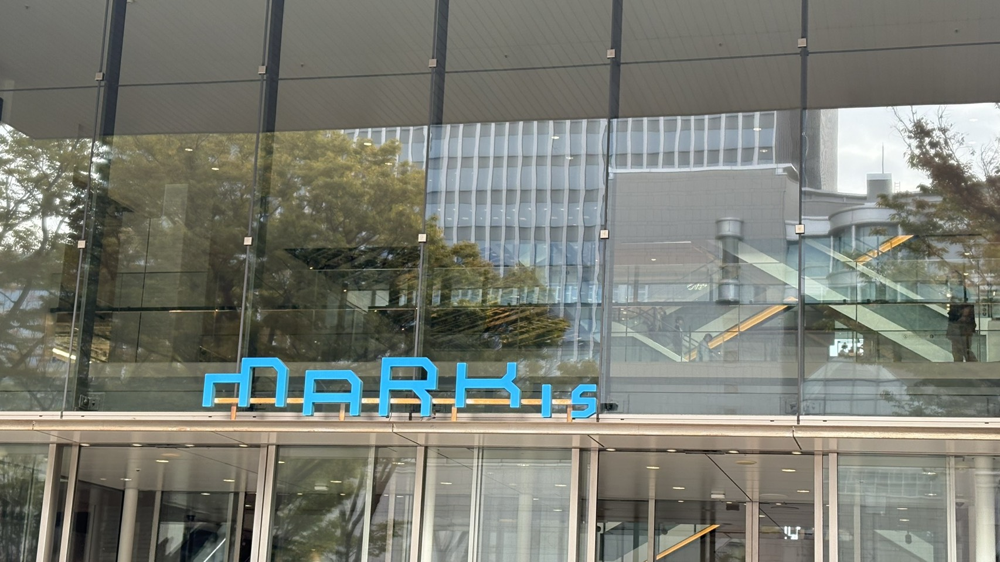
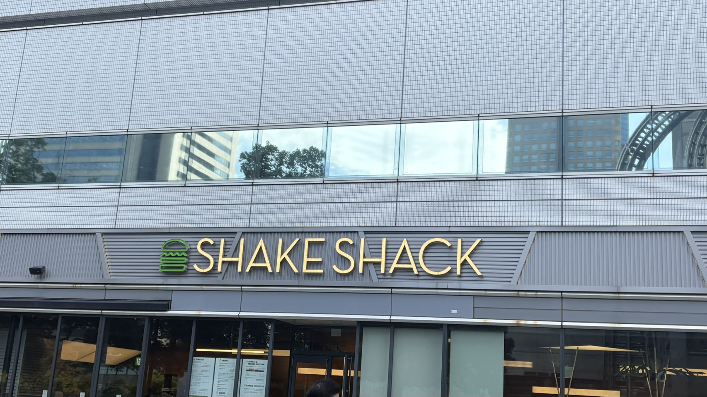
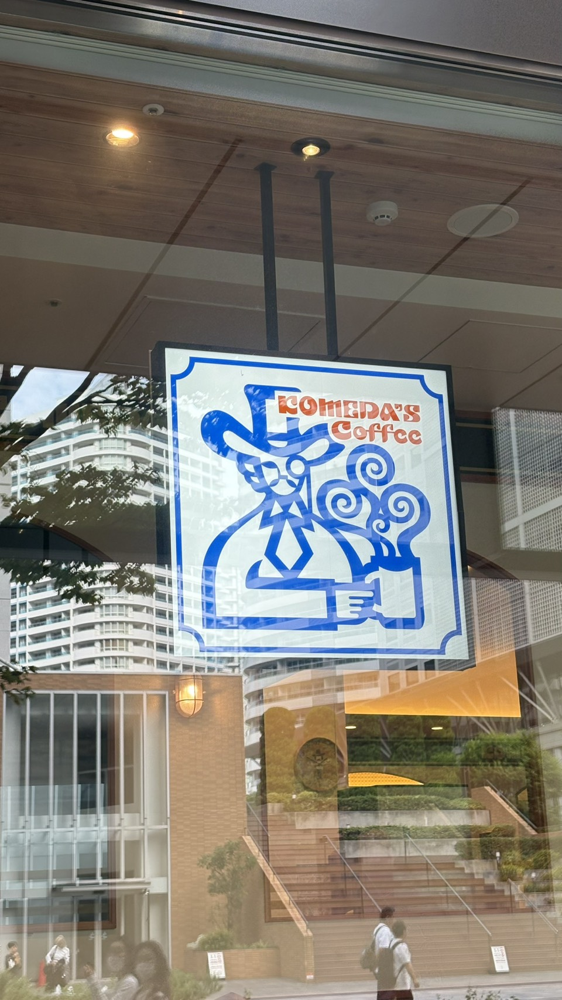

路上観察
[Markis]

みなとみらいにあるマークイズの看板
10月19日撮影（本人） フォントが見たことない感じなのと近未来的な雰囲気があって面白いなと思った
[SHAKE SHACK]

SHAKESHACKみなとみらい店の看板
10月19日撮影（本人）
少し高級なハンバーガー屋さんだから、スタイリッシュでシンプルなデザインなのがいい
ハンバーガーを一色で線だけで表現してるけど一目でハンバーガーだということが分かる
[コメダ珈琲]

コメダ珈琲みなとみらいグランドセントラルタワー店
10月19日撮影（本人）
看板に描かれている人が洋風のジェントルマンみたいな見た目だからお店がレトロで異国風な雰囲であるのを読み取れる
色が青とオレンジだから落ち着ている感じがする